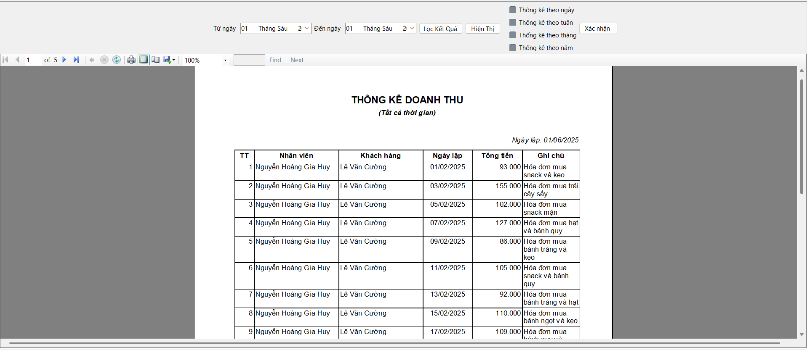

Chào mừng đến Muchie Corner!

Hướng dẫn sử dụng – Thống kê doanh thu
- Chọn thời gian: Sử dụng các ô chọn "Từ ngày" và "Đến ngày" để lọc doanh thu theo mốc thời gian mong muốn.
- Phân loại thống kê: Có thể chọn 1 trong 4 loại:
- Thống kê theo ngày
- Thống kê theo tuần
- Thống kê theo tháng
- Thống kê theo năm
- Nút "Lọc kết quả": Nhấn để lọc dữ liệu theo khoảng thời gian đã chọn.
- Nút "Hiện Thị": Xem trước báo cáo doanh thu với các thông tin như nhân viên, khách hàng, tổng tiền, ghi chú, v.v.
- Nút "Xác nhận": Xác thực lựa chọn loại thống kê (ngày, tuần, tháng, năm).
- Giao diện báo cáo: Hiển thị danh sách các giao dịch với cột:
- STT
- Nhân viên
- Khách hàng
- Ngày lập
- Tổng tiền
- Ghi chú
- Chuyển trang: Dùng các nút mũi tên để xem các trang tiếp theo hoặc quay lại trang trước trong báo cáo.
- Chức năng in: Nhấn nút máy in để in báo cáo doanh thu.
- Chức năng xuất file: Nhấn biểu tượng lưu để xuất báo cáo ra các định dạng như PDF, Excel, v.v.
Lưu ý: Cần chọn đúng thời gian và loại thống kê trước khi nhấn "Lọc kết quả" để có dữ liệu chính xác.